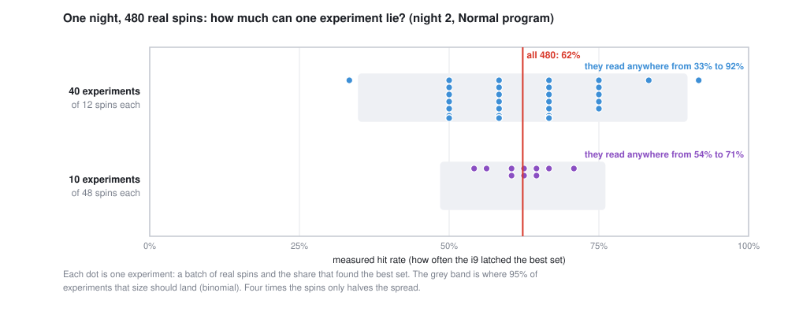

On night 2 the machine finds the best set of trades 62% of the time, measured over 480 real spins. Run only 12 and you could read anything from 33% to 92%. This lesson is about not fooling yourself: noise, comparing fairly, and what happened when we trained a program harder and it got worse.
A spin either lands the best set or it doesn't, a coin flip with an unknown bias. The hit rate is the share of spins that land it. (If the machine is new to you, start with The Machine.) To see how much a hit rate can mislead, we ran 480 real spins on one night and cut them into experiments: forty of 12 spins, and ten of 48.

The spread follows a simple rule. A hit rate measured over n spins has a standard error of √(p(1−p)/n), where p is the true rate. At p = 0.62 that's 14 points for 12 spins and 7 for 48. Roughly 95% of experiments land within two standard errors, the grey bands. Four times the spins only halves the error, so certainty gets expensive fast.
Early in the project, programs were compared at 12 spins a night, and a night's score could swing 15 points either way. Every number on this site since then is at least 48 spins a board, and usually many boards.
Two learned programs, run 3 and run 5, looked tied in 20-night tests. So we ran both on 60 fresh nights, 48 spins each, with the same boards and the same random seeds, and asked whether run 5 is really better. Here is the same data, analyzed two ways:
| Analysis | Run 5 − run 3 | 95% interval | Verdict |
|---|---|---|---|
| Paired: compare per board, then average | +2.7 points | [+1.5, +4.1] | Run 5 is better |
| Unpaired: compare the two averages | +2.7 points | [−0.1, +5.7] | Can't tell |
Same difference, opposite verdicts. Some nights are easy and some are brutal, and that night-to-night swing is far bigger than the gap between the programs. The unpaired analysis counts all of it as noise. The paired one subtracts it out: on each board, both programs faced the same night with the same luck, so the difference is just the programs. Run 5 won on 32 boards, run 3 on 8, and 20 were ties.
Running both candidates on identical randomness is called common random numbers, and pairing the results is what makes it pay. The intervals come from a bootstrap: resample the 60 per-board differences thousands of times and see how much the average moves (CortenForge's sim-opt does this).
The game's Smart program is a cooling schedule that CortenForge's CEM (the cross-entropy method, a simple reinforcement-learning algorithm) learned by trial and error on 11 hard training nights. Every version was then judged on nights it had never seen. That last step is the one that saved us.
| Version | What changed | On nights it never trained on |
|---|---|---|
| Run 1 | Reward included a small cost for heat | Abandoned: on easy nights every candidate tied, so the heat cost alone ranked them, and CEM learned to run cold |
| Run 2 | No heat cost | 80% vs Normal's 81%: no better |
| Run 5 (ships) | Restarts, and memory: it reheats when the strips freeze | 95% vs Normal's 83% |
| Run 6 | From run 5, trained 50% longer on 3× the boards (with wants and give-aways) | Worse everywhere: 91% vs 94%, and 84% vs 88% |
Run 6 had more data and more training, and it got worse. CEM scores each candidate schedule by one spin on one board, and we just saw how noisy one spin is. Run 5 was already near the ceiling, so the noise in those scores was bigger than any real improvement left to find. CEM followed the noise, and nothing in training told it to stop. Only the held-out nights showed it.
A schedule tuned by hand, by trying settings and keeping the best on nights 1-10, scored 91% there, beating CEM's 88%. On fresh nights 61-80 it scored 94% to run 5's 95%. Its lead on nights 1-10 came from being picked on the same nights it was scored on. Pick the best of many tries on one set of data, and some of its score is luck that won't repeat.
# this lesson's figure: 480 spins on one night (~45 s)
cargo run --release --example machine_figs -- noise
# run 5 vs run 3 vs Normal, paired bootstrap, 60 fresh nights (~17 min)
cargo run --release --example trade_cli -- rematch --nights 81..140 --runs 48 --seed 2000
# the learned program vs Normal, night by night
cargo run --release --example trade_cli -- versus --smart --nights 61..80 --seed 1000The learned program is src/trade/smart.rs, and the full training log, failed runs included, is "Step 4" in the repo's docs/PLAN.md.
On night 2, about how many spins do you need for a 95% interval of ±5 points on the hit rate?
Solve 1.96 × √(0.62 × 0.38 / n) = 0.05: n ≈ 3.84 × 0.236 / 0.0025 ≈ 362 spins. That's for one night. A claim about all nights needs many nights too.
You test 20 tweaks of a strategy, none of which is actually better, each at the 95% level. How many "significant" winners do you expect? What's the chance of at least one?
One expected false positive (20 × 5%). At least one: 1 − 0.9520 ≈ 64%. Odds are you'll find a "winner" in pure noise.
Why did pairing shrink the interval so much here, when it's the same 60 boards either way?
Each program's hit rate varies a lot from board to board, because nights differ in difficulty. Both programs see the same difficulty on the same board, so the per-board differences vary much less than the scores themselves. The unpaired analysis treats the difficulty swing as noise in each average.
At four times the compute, the row of washers and the best of four run-5 washers both land the best set 100% of the time. Which is better?
The test can't say. Both hit the ceiling, so it has no room to show a difference. You need a harder test (less compute or harder boards) where neither is perfect. At equal compute the row won, 96.8% to 93.1%.